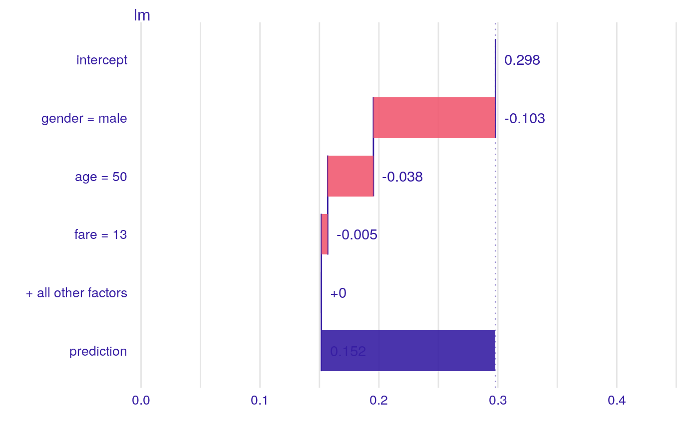

This function finds Variable Attributions via Sequential Variable Conditioning.
It calls either local_attributions for additive attributions
or local_interactions for attributions with interactions.
break_down(x, ..., interactions = FALSE) # S3 method for explainer break_down(x, new_observation, ..., interactions = FALSE) # S3 method for default break_down( x, data, predict_function = predict, new_observation, keep_distributions = FALSE, order = NULL, label = class(x)[1], ..., interactions = FALSE )
Arguments
| x | an explainer created with function |
|---|---|
| ... | parameters passed to |
| interactions | shall interactions be included? |
| new_observation | a new observation with columns that correspond to variables used in the model. |
| data | validation dataset, will be extracted from |
| predict_function | predict function, will be extracted from |
| keep_distributions | if |
| order | if not |
| label | name of the model. By default it is extracted from the 'class' attribute of the model. |
Value
an object of the break_down class.
References
Explanatory Model Analysis. Explore, Explain and Examine Predictive Models. https://pbiecek.github.io/ema
See also
Examples
library("DALEX")#> #>library("iBreakDown") # Toy examples, because CRAN angels ask for them titanic <- na.omit(titanic) set.seed(1313) titanic_small <- titanic[sample(1:nrow(titanic), 500), c(1,2,6,9)] model_titanic_glm <- glm(survived == "yes" ~ gender + age + fare, data = titanic_small, family = "binomial") explain_titanic_glm <- explain(model_titanic_glm, data = titanic_small[,-9], y = titanic_small$survived == "yes")#> Preparation of a new explainer is initiated #> -> model label : lm ( default ) #> -> data : 500 rows 4 cols #> -> target variable : 500 values #> -> model_info : package stats , ver. 3.6.1 , task regression ( default ) #> -> predict function : yhat.glm will be used ( default ) #> -> predicted values : numerical, min = 0.111212 , mean = 0.298 , max = 0.9430377 #> -> residual function : difference between y and yhat ( default ) #> -> residuals : numerical, min = -0.789032 , mean = 1.799189e-14 , max = 0.8594593 #> A new explainer has been created!bd_rf <- break_down(explain_titanic_glm, titanic_small[1, ]) bd_rf#> contribution #> lm: intercept 0.298 #> lm: gender = male -0.103 #> lm: age = 50 -0.038 #> lm: fare = 13 -0.005 #> lm: survived = no 0.000 #> lm: prediction 0.152#>#>set.seed(1313) # example with interaction # classification for HR data model <- randomForest(status ~ . , data = HR) new_observation <- HR_test[1,] explainer_rf <- explain(model, data = HR[1:1000,1:5], y = HR$status[1:1000])#> Preparation of a new explainer is initiated #> -> model label : randomForest ( default ) #> -> data : 1000 rows 5 cols #> -> target variable : 1000 values #> -> target variable : Please note that 'y' is a factor. ( WARNING ) #> -> target variable : Consider changing the 'y' to a logical or numerical vector. #> -> target variable : Otherwise I will not be able to calculate residuals or loss function. #> -> model_info : package randomForest , ver. 4.6.14 , task classification ( default ) #> -> predict function : yhat.randomForest will be used ( default ) #> -> predicted values : predict function returns multiple columns: 3 ( WARNING ) some of functionalities may not work #> -> residual function : difference between y and yhat ( default )#> Warning: ‘-’ not meaningful for factors#> -> residuals : numerical, min = NA , mean = NA , max = NA #> A new explainer has been created!bd_rf <- break_down(explainer_rf, new_observation) bd_rf#> contribution #> randomForest.fired: intercept 0.386 #> randomForest.fired: hours = 42.32 0.231 #> randomForest.fired: evaluation = 2 0.062 #> randomForest.fired: salary = 2 -0.272 #> randomForest.fired: age = 57.73 0.092 #> randomForest.fired: gender = male 0.281 #> randomForest.fired: prediction 0.778 #> randomForest.ok: intercept 0.278 #> randomForest.ok: hours = 42.32 -0.053 #> randomForest.ok: evaluation = 2 0.091 #> randomForest.ok: salary = 2 0.271 #> randomForest.ok: age = 57.73 -0.086 #> randomForest.ok: gender = male -0.283 #> randomForest.ok: prediction 0.218 #> randomForest.promoted: intercept 0.336 #> randomForest.promoted: hours = 42.32 -0.178 #> randomForest.promoted: evaluation = 2 -0.152 #> randomForest.promoted: salary = 2 0.001 #> randomForest.promoted: age = 57.73 -0.006 #> randomForest.promoted: gender = male 0.002 #> randomForest.promoted: prediction 0.004plot(bd_rf)# }